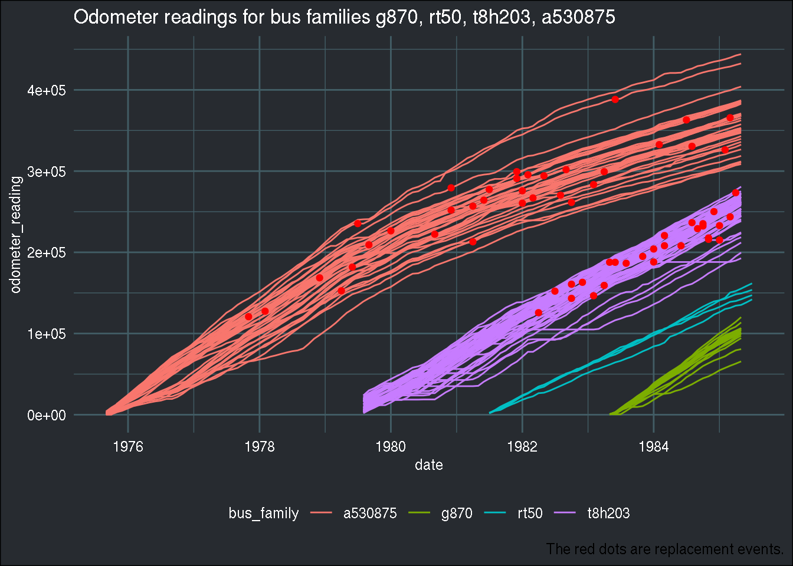

Dynamic discrete choice models, reinforcement learning and Harold, part 2
February 14, 2020In this blog post, I present a paper that has really interested me for a long time. This is part2, where I will briefly present the model of the paper, and try to play around with the data. If you haven’t, I suggest you read part 1 where I provide more context.
Rust’s model
Welcome to part 2 of this series, which might or might not have a part 3. I have been quite busy with this paper and especially with reinforcement learning these past couple of weeks, but in the meantime, other things have taken some of my time, so who knows if I’ll keep discussing this paper.
Before going into the data, let me describe the model very broadly. The problem is as follows: each month, Harold Zurcher must decide whether to simply perform some basic maintenance on the buses he’s responsible for, or he can decide to completely replace the engine. Let his utility function be as follows:
\[ u(x_t, i_t, \theta_1) = \left\{ \begin{array}{lcl} -c(x_t, \theta_1) & \text{if} & i_t = 0, \\ -[\overline{P} - \underline{P} + c(0, \theta_1)] & \text{if} & i_t = 1,\\ \end{array}\right. \]
where \(x_t\) is the state variable, the reading of the odometer at month \(t\), \(i_t\) is Harold Zurcher’s decision at time \(t\). \(i_t = 0\) is the decision to keep the engine, \(i_t = 1\) is the decision to replace. Each time the engine is replaced, the state variable \(x_t\) regenerates to 0. That is why John Rust, the paper’s author, calls the problem under study a regenerative optimal stopping model. If \(i_t = 0\) (keep the engine) is chosen, then the cost of normal maintenance is \(c(x_t, \theta_1)\), if \(i_t = 1\) (change the engine) then the cost is \(\overline{P}\), which is the price of the new engine. However, it is still possible to sell the old engine for scrap value, \(\underline{P}\). The replacement cost is equal to \(c(0, \theta_1)\). \(\theta_1\) is a vector of parameters of the cost function to estimate. Because Harold Zurcher is forward looking, and does not want to simply maximize the current month’s utility, he seeks to maximize his intertemporal utility function. The optimal policy would be the solution to the following equation:
\[ V_{\theta} = \max E\left\{ \sum_{j = t}^\infty \beta^{j-t}u(x_j, f_j, \theta_1) | x_t\right\} \]
This is a so-called value function, which is the total reward at the solution of the problem.
The state variable evolves according to a stochastic process given by the following transition probability:
\[ p(x_{t+1} | x_t, i_t, \theta_2) = \left\{ \begin{array}{lllll} \theta_2 \exp\{\theta_2(x_{t+1} - x_t)\} & \text{if} & i_t = 0 & \text{and} & x_{t+1} \geq x_t \\ \theta_2 \exp\{\theta_2(x_{t+1})\} & \text{if} & i_t = 0 & \text{and} & x_{t+1} \geq 0 \\ 0 & \text{otherwise}\\ \end{array}\right. \]
\(\theta_2\) is the parameter of the exponential distribution, another parameter to estimate. I’ll stop with one more equation, the Bellman equation:
\[ V_\theta(x_t) = \max_{i_t \in C(x_t)} [u(x_t, i_t, \theta_1) + \beta EV_\theta(x_t, i_t)] \]
where \(C(x_t) = {0, 1}\) is the action set. The value function is the unique solution to this Bellman equation.
As you can see, this is quite complex (and I have not detailed everything!) but the advantage of models is that one can estimate its structural parameters and put a dollar value on the expected replacement cost, \(\overline{P} - \underline{P}\) in addition to validating the very first hypothesis of the paper; does Harold Zurcher behave optimally?
In what follows, I’ll use the {ReinforcementLearning} package to try to find the optimal policy rule.
The optimal policy rule tells us what is the best action at each period. Reinforcement learning is
an approach that is widely used in machine learning to solve problems very similar to the one that
I described above. However, as we shall see, it will fail here, and there’s a very good reason
for that. First, let’s load the data that was prepared last time:
all_bus_data <- read_csv("https://raw.githubusercontent.com/b-rodrigues/rust/ee15fb87fc4ba5db28d055c97a898b328725f53c/datasets/processed_data/all_buses.csv")## Parsed with column specification:
## cols(
## bus_id = col_double(),
## date = col_date(format = ""),
## odometer_reading = col_double(),
## replacement = col_double(),
## bus_family = col_character()
## )head(all_bus_data)## # A tibble: 6 x 5
## bus_id date odometer_reading replacement bus_family
## <dbl> <date> <dbl> <dbl> <chr>
## 1 4239 1974-12-01 140953 0 a452372
## 2 4239 1975-01-01 142960 0 a452372
## 3 4239 1975-02-01 145380 0 a452372
## 4 4239 1975-03-01 148140 0 a452372
## 5 4239 1975-04-01 150921 0 a452372
## 6 4239 1975-05-01 153839 0 a452372In the paper, the author groups the 4 following bus families, so I’ll be doing the same:
family_group <- c("g870", "rt50", "t8h203", "a530875")
group1_4 <- all_bus_data %>%
filter(bus_family %in% family_group)
ggplot(group1_4) +
geom_line(aes(y = odometer_reading, x = date, group = bus_id, col = bus_family)) +
geom_point(aes(y = ifelse(odometer_reading*replacement == 0, NA, odometer_reading*replacement),
x = date), col = "red") +
labs(title = paste0("Odometer readings for bus families ", paste0(family_group, collapse = ", ")),
caption = "The red dots are replacement events.") +
theme(plot.caption = element_text(colour = "white")) +
brotools::theme_blog()## Warning: Removed 8200 rows containing missing values (geom_point).
There are 104 buses in this subset of data. Let’s discretize
the odometer reading using the ntile() function. Discretizing the state variable will make
computation faster:
group1_4 <- group1_4 %>%
mutate(state_at_replacement = ifelse(replacement == 1, odometer_reading, NA)) %>%
group_by(bus_id) %>%
fill(state_at_replacement, .direction = "down") %>%
ungroup() %>%
mutate(state_at_replacement = odometer_reading - state_at_replacement) %>%
mutate(state_at_replacement = ifelse(is.na(state_at_replacement), odometer_reading, state_at_replacement)) %>%
mutate(state = ntile(state_at_replacement, 50))Let me also save the bus ids in a vector, I’ll need it later:
buses <- unique(group1_4$bus_id)To use the dataset with the {ReinforcementLearning} package, it must first be prepared:
group1_4 <- group1_4 %>%
group_by(bus_id) %>%
mutate(next_state = lead(state, 1)) %>%
mutate(replacement = lead(replacement, 1)) %>%
mutate(action = replacement) %>%
select(state, action, reward = replacement, next_state) %>%
mutate(reward = (-1)*reward) %>%
mutate(action = ifelse(is.na(action), 0, action),
reward = ifelse(is.na(reward), 0, reward)) %>%
mutate(next_state = ifelse(is.na(next_state), state + 1, next_state)) %>%
mutate(state = as.character(state),
next_state = as.character(next_state),
action = as.character(action)) ## Adding missing grouping variables: `bus_id`Let’s see how the data looks:
head(group1_4)## # A tibble: 6 x 5
## # Groups: bus_id [1]
## bus_id state action reward next_state
## <dbl> <chr> <chr> <dbl> <chr>
## 1 5297 2 0 0 3
## 2 5297 3 0 0 4
## 3 5297 4 0 0 5
## 4 5297 5 0 0 6
## 5 5297 6 0 0 8
## 6 5297 8 0 0 9So when action 0 (do nothing) is chosen, the value of the state is increased by one. If action 1 (replace) is chosen:
group1_4 %>%
filter(action == "1") %>%
head## # A tibble: 6 x 5
## # Groups: bus_id [6]
## bus_id state action reward next_state
## <dbl> <chr> <chr> <dbl> <chr>
## 1 5297 34 1 -1 1
## 2 5299 42 1 -1 1
## 3 5300 43 1 -1 1
## 4 5301 36 1 -1 1
## 5 5302 30 1 -1 1
## 6 5303 49 1 -1 1The state goes back to 1, and the reward is -1.
Now, let’s split the dataset into two: a training dataset and a testing dataset:
set.seed(1234)
train_buses <- sample(buses, size = round(length(buses)*.8))
test_buses <- setdiff(buses, train_buses)There will be 83 in the training data and 21 in the testing data:
train_data <- group1_4 %>%
filter(bus_id %in% train_buses)
test_data <- group1_4 %>%
filter(bus_id %in% test_buses)We’re finally ready to use the {ReinforcementLearning} package.
library(ReinforcementLearning)
model <- ReinforcementLearning(train_data,
s = "state",
a = "action",
r = "reward",
s_new = "next_state")Now what’s the result?
model## State-Action function Q
## 0 1
## X30 0 -0.19000
## X31 0 0.00000
## X1 0 0.00000
## X32 0 0.00000
## X2 0 0.00000
## X33 0 -0.10000
## X3 0 0.00000
## X34 0 -0.19000
## X4 0 0.00000
## X35 0 0.00000
## X5 0 0.00000
## X36 0 -0.19000
## X6 0 0.00000
## X37 0 -0.10000
## X7 0 0.00000
## X38 0 0.00000
## X8 0 0.00000
## X39 0 -0.34390
## X9 0 0.00000
## X10 0 0.00000
## X40 0 -0.10000
## X11 0 0.00000
## X41 0 -0.10000
## X12 0 0.00000
## X42 0 -0.34390
## X13 0 0.00000
## X43 0 -0.40951
## X14 0 0.00000
## X44 0 -0.19000
## X45 0 -0.34390
## X15 0 0.00000
## X46 0 -0.27100
## X16 0 0.00000
## X47 0 -0.19000
## X17 0 0.00000
## X48 0 -0.40951
## X18 0 0.00000
## X49 0 -0.34390
## X19 0 0.00000
## X50 0 -0.34390
## X20 0 0.00000
## X21 0 0.00000
## X22 0 0.00000
## X23 0 0.00000
## X24 0 0.00000
## X25 0 0.00000
## X26 0 0.00000
## X27 0 0.00000
## X28 0 0.00000
## X29 0 -0.10000
##
## Policy
## X30 X31 X1 X32 X2 X33 X3 X34 X4 X35 X5 X36 X6 X37 X7 X38 X8 X39 X9 X10
## "0" "0" "0" "0" "0" "0" "0" "0" "0" "0" "0" "0" "0" "0" "0" "0" "0" "0" "0" "0"
## X40 X11 X41 X12 X42 X13 X43 X14 X44 X45 X15 X46 X16 X47 X17 X48 X18 X49 X19 X50
## "0" "0" "0" "0" "0" "0" "0" "0" "0" "0" "0" "0" "0" "0" "0" "0" "0" "0" "0" "0"
## X20 X21 X22 X23 X24 X25 X26 X27 X28 X29
## "0" "0" "0" "0" "0" "0" "0" "0" "0" "0"
##
## Reward (last iteration)
## [1] -48We see that the optimal policy is always to do nothing! This is actually “normal” here, as we are using historical data; and in this data, there is no information on the likelihood of severe engine failure if one does not replace it completely at some point! So the agent does not see the point in replacing the engine; it costs money and does not seem to bring in any benefit!
Another way of using the {ReinforcementLearning} package
is to write a function that simulates the environment. One could write such a function, and add in it
a probability of severe failure with a very big cost. This probability would increase as the state
(number of miles driven) increases as well. With such a function, there would be simulations where
the cost of doing nothing would be very high, and as such, hopefully, the agent would learn that
replacing the engine once might be a better course of action than doing nothing.
This might be the subject of part 3 of this series!
Hope you enjoyed! If you found this blog post useful, you might want to follow me on twitter for blog post updates and watch my youtube channel. If you want to support my blog and channel, you could buy me an espresso or paypal.me, or buy my ebook on Leanpub.